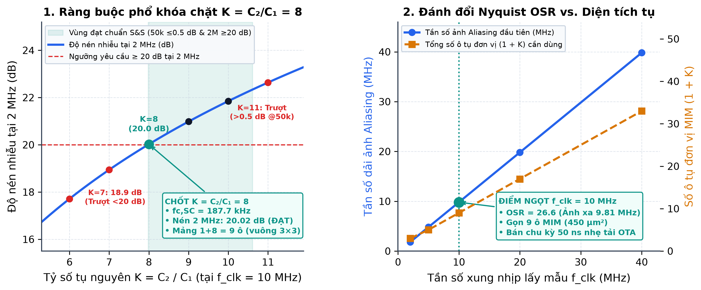
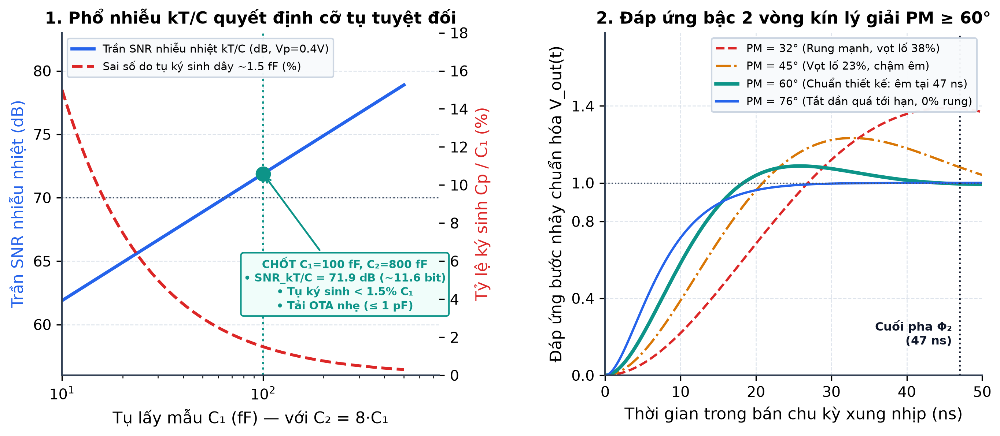
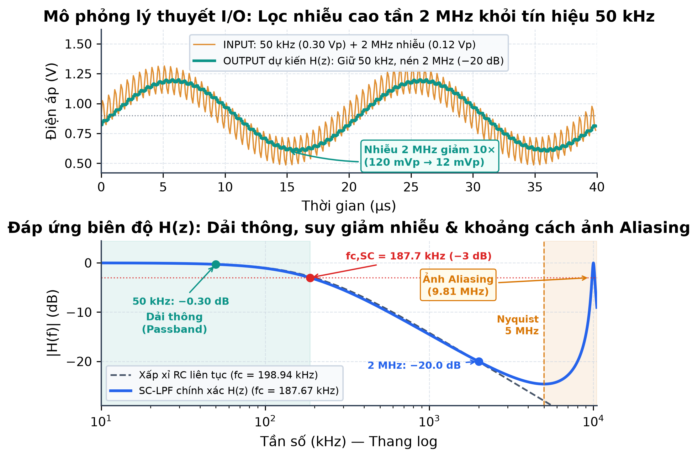

Top-Down 3-Tier Analog IC Design • sky130-sc-lpf
Mạch Lọc Thông Thấp Tụ Chuyển Mạch
Trên Tiến Trình SkyWater 130nm
Báo cáo chuyên sâu Tuần 1: Dẫn xuất liền mạch từ Vấn đề vật lý đầu thu $\rightarrow$ Lý thuyết Tín hiệu & Hệ thống quyết định thông số $\rightarrow$ Hiện thực Vi mạch 4 khối & Kiểm định ổn định.
Tại Sao Chuỗi Thu Mixed-Signal Bắt Buộc Cần Mạch Lọc Thông Thấp?
Một khi nhiễu $\ge 2\text{ MHz}$ đã gập vào dải $0\text{–}50\text{ kHz}$ sau lấy mẫu ADC, không bộ lọc số DSP nào tách lại được.
Gai nhiễu lớn cộng chồng lên tín hiệu làm kịch trần nguồn $1.8\text{ V}$, gây méo xén đỉnh nghiêm trọng.
Chân Dung Tín Hiệu Đích, Nguồn Nhiễu & Ràng Buộc Nguồn Đơn $1.8\text{ V}$
Băng Gốc $\le 50\text{ kHz}$
- Nguồn gốc: Ngõ ra Mixer BLE/IoT, cảm biến MEMS, siêu âm, DAC.
- Biên độ điển hình: $A_{\text{sig}} = 0.30\text{ V}_p$.
- Bảo toàn: Suy hao $\le 0.5\text{ dB}$, trễ nhóm phẳng không méo dạng.
Can Nhiễu $\ge 2\text{ MHz}$
- Nguồn gốc: Kênh vô tuyến lân cận, gợn nguồn xung DC–DC, hài clock số.
- Biên độ nhiễu: $A_{\text{int}} \approx 0.12\text{ V}_p$.
- Triệt tiêu: Nén tối thiểu $\ge 20\text{ dB}$ (giảm $\ge 10\times$ biên độ).
$V_{DD}=1.8\text{ V}, V_{CM}=0.9\text{ V}$
- Tổng biên độ đỉnh $0.30 + 0.12 = 0.42\text{ V}$.
- Đặt $V_{CM} = V_{DD}/2 = \mathbf{0.9\text{ V}}$ tối ưu dải đối xứng $[0.5, 1.3]\text{ V}$.
Giải Bất Phương Trình Phổ: Vì Sao Chọn Bậc $N=1$ & $f_c \in [143.1, 201.0]\text{ kHz}$?
Khoảng chuyển tiếp tần số từ dải thông đến nhiễu:
- Lọc bậc $N=1$ dốc $-20\text{ dB/dec}$ $\implies$ dư khả năng nén $\ge 20\text{ dB}$ trong $1.6\text{ dec}$ mà chỉ cần đúng 1 OTA.
- Hàm truyền chuẩn: $H(s) = \frac{1}{1 + s/(2\pi f_c)}$, $|H(jf)|^2 = \frac{1}{1 + (f/f_c)^2}$.
Tại Sao Phổ Tuần Hoàn $X_s(f)$ Ép Xung Nhịp Lấy Mẫu Tại $f_{\text{clk}} = 10\text{ MHz}$?
- $\text{OSR} \approx 2.6$: Ảnh chồng phổ sát ngay $812\text{ kHz}$.
- Góc rời rạc $\Omega_c = \omega_c T_{\text{clk}} = 1.18\text{ rad}$ gây méo tần số nặng.
- $\text{OSR} = \mathbf{26.64}$, góc nhỏ $\Omega_c = \mathbf{0.118\text{ rad}} \ll 1$ ($H(z) \approx H(s)$).
- Ảnh ở $9.81\text{ MHz}$; bán chu kỳ $50\text{ ns}$ thoải mái cho OTA.
- Phải tăng tỷ số tụ $C_2/C_1 = \mathbf{80}$ $\implies$ tốn diện tích MIM gấp $10\times$.
- Bán chu kỳ còn $5\text{ ns}$ ép $\text{GBW} > 100\text{ MHz}$ (đốt dòng lớn).
Đồ Thị Không Gian Thiết Kế: Vì Sao Khóa Chặt Tỷ Số $K = C_2/C_1 = 8$?

$K=7$ cho nén $2\text{ MHz} = \mathbf{18.9\text{ dB}} < 20\text{ dB}$ (trượt dải chắn); $K \ge 11$ gây suy hao $50\text{ kHz} > 0.5\text{ dB}$.
Đạt vừa khít $-20.02\text{ dB}$ tại $2\text{ MHz}$, chỉ mất $-0.30\text{ dB}$ tại $50\text{ kHz}$ với số ô tụ nhỏ nhất.
Đặt $C_1$ tại tâm $(2,2)$ và $8$ ô $C_2$ bao quanh tạo ma trận đối xứng tâm Common-Centroid triệt gradient!
Bảo Toàn Điện Tích 2 Pha, Ánh Xạ Backward-Euler & Ổn Định BIBO
Chia cho $T_{\text{clk}}$: tương đương thay đạo hàm $s \leftarrow \frac{1 - z^{-1}}{T_{\text{clk}}}$ (Ánh xạ Backward-Euler của mạch $RC$ có $\tau = \frac{C_2}{C_1}T_{\text{clk}}$):
Từ Băng Thông Nhiễu NEB & Đáp Ứng Bậc 2 → Chốt $C_1, C_2$ & $\text{PM} \ge 60^\circ$

$\overline{v_{n,\text{out}}^2} = \int_0^\infty 4k_B T R_{\text{on}}|H|^2 df \approx \frac{k_B T}{C_2}$ (độc lập $R_{\text{on}}$!). Chọn $C_1 = 100\text{ fF}, C_2 = 800\text{ fF}$ cho $v_n = 72.0\ \mu\text{V}_{\text{rms}} \implies \mathbf{\text{SNR} = 71.9\text{ dB}}$ và ký sinh dây $< 1.5\%$.
Nếu $\text{PM} < 45^\circ$, đáp ứng bước nhảy rung mạnh trong cửa sổ $47\text{ ns}$ làm sai mẫu. Bắt buộc $\text{PM} \ge 60^\circ \iff f_{p2} \ge \sqrt{3}\,\text{GBW}$ để xác lập êm.
Bảng Ánh Xạ Nhân Quả: Từ Lý Thuyết Tín Hiệu & Hệ Thống Sang Thông Số Chip
| Bài toán Tín hiệu & Hệ thống (Tầng 2) | Phương trình / Ràng buộc Toán học | Thông số Chip Khóa Cứng (Tầng 3) |
|---|---|---|
| Giữ $\le 50\text{ kHz}$ ($\le 0.5\text{ dB}$), cắt $2\text{ MHz}$ ($\ge 20\text{ dB}$) | $f_c \in [143.1, 201.0]\text{ kHz}$, Backward-Euler | Lọc bậc $N=1$, $K = C_2/C_1 = 8$ ($f_{c,\text{SC}} = 187.67\text{ kHz}$) |
| Chống chồng phổ (Aliasing) & tránh méo góc $\Omega_c$ | $\text{OSR} = \frac{f_{\text{clk}}}{2 f_c} \gg 1$, $\Omega_c = 0.118\text{ rad}$ | $f_{\text{clk}} = 10\text{ MHz}$ (Ảnh xa ở $9.81\text{ MHz}$, $T_{\text{clk}}=100\text{ ns}$) |
| Sàn nhiễu gập phổ $\text{SNR} > 70\text{ dB}$ ($\sim 11.6\text{ bit}$) | $\overline{v_{n,\text{out}}^2} = \frac{k_B T}{C_2}$, $C_1 \gg C_p$ | $C_1 = 100\text{ fF}, C_2 = 800\text{ fF}$ ($v_n = 72\ \mu\text{V}_{\text{rms}}$, mảng $3\times 3$) |
| Không rò mẫu & triệt sai số xác lập / méo THD | $\Phi_1\cdot\Phi_2 = 0$; $\epsilon_{\text{set}} = e^{-t_{\text{on}}/(R_{\text{on}}C_1)} \to 0$ ($94\tau$) | $t_{\text{nov}} \in [2,5]\text{ ns}$, khóa TG $R_{\text{on}} < 5\text{ k}\Omega$ |
| Cách ly tải $C_L=1\text{ pF}$, sai số DC $<1\%$, không rung | $\epsilon_A = \frac{1}{1+A_{OL}} < 1\%$, $f_{p2} \ge \sqrt{3}\,\text{GBW}$ | 5T-OTA ($\beta=1$): $A_{OL}>40\text{ dB}, \text{GBW}>10\text{ MHz}, \text{PM}\ge 60^\circ$ |
| Tránh xén đỉnh (Clipping $\to \text{HD}_3$) trên nguồn đơn | $v_{\text{in}}(t) = V_{CM} \pm 0.42\text{ V} \subset [V_{\min}, V_{\max}]$ | $V_{DD} = 1.8\text{ V}, V_{SS} = 0\text{ V}, V_{CM} = 0.9\text{ V}$ |
Vì Sao Mạch $RC$ Phá Vỡ Cửa Sổ $f_c$ & Giải Pháp Ô Tụ Đơn Vị MIM
3 loại điện trở Poly trên sky130A
Vi phạm S&S- res_generic_po ($48.2\ \Omega/\square$): dài $7.26\text{ mm}$.
- res_high_po ($357.9\ \Omega/\square$): dài $978\ \mu\text{m}$.
- res_xhigh_po ($2.58\text{ k}\Omega/\square$): trôi $f_c$ từ $150.8\text{ kHz}$ (hh) lên $270.6\text{ kHz}$ (ll, trượt chuẩn!).
Ô tụ MIM chuẩn cap_mim_m3_1
Khóa cứng $f_c$- Chẵn bước lưới Magic $0.05\ \mu\text{m}$, tổng $9$ ô chỉ $450\ \mu\text{m}^2$.
- Tỷ số $1:8$ bất biến PVT ($\mathbf{0.0\%}$), mismatch cục bộ $< 0.1\%$.

Số liệu đo Ngspice-47 trên 7 góc công nghệ & nhiệt độ của PDK sky130A
Xung Hai Pha Không Chồng Lấn: Bảo Vệ Định Luật Bảo Toàn Điện Tích
Đảm bảo TG1 khóa hẳn ($V_{GS} = 0$) trước khi TG2 dẫn qua mọi góc nhanh/chậm PVT, giữ $\Phi_1 \cdot \Phi_2 \approx 0$.
Không ăn lẹm quá $10\%$ bán chu kỳ $50\text{ ns}$, bảo toàn cửa sổ dẫn $t_{\text{on}} \ge 45\text{–}47\text{ ns}$ cho tụ và OTA xác lập.
Cân bằng sườn lên/xuống giữa $\Phi_1$ và $\overline{\Phi_1}$ giúp NMOS và PMOS tắt đồng thời, tối ưu triệt Clock Feedthrough.
Tại Sao Phải Ép $R_{\text{on}} < 5\text{ k}\Omega$ ($94\tau$) Thay Vì $68\text{ k}\Omega$?
Nạp $99.9\%$ chỉ cần $R_{\text{on}} < 68\text{ k}\Omega$ ($6.9\tau$). Nhưng do $R_{\text{on}}(V_{\text{in}})$ biến thiên mạnh theo tín hiệu, nếu $\tau$ lớn sẽ gây méo hài động $\text{HD}_2, \text{HD}_3$!
Tại $V_{CM}=0.9\text{ V}$ ($V_{SB}=0.9\text{ V}$), $V_{TH,n}$ tăng từ $0.74\text{ V} \to \mathbf{0.866\text{ V}}$ và $|V_{TH,p}| = \mathbf{0.938\text{ V}}$, tạo đỉnh nội trở tại $V_{\text{in}} \approx 0.965\text{ V}$.
Tỷ lệ $W_p/W_n = 3$ bù $\mu_n/\mu_p \approx 2.7$: đạt $R_{\text{on,max}} = \mathbf{2.26\text{ k}\Omega}$ (góc ss: $4.53\text{ k}\Omega < 5\text{ k}\Omega$), nạp đủ $94\tau$ ($e^{-94} \approx 0$)!

Quét DC Ngspice-47 trên dải tín hiệu $0.9 \pm 0.4\text{ V}$ (vùng tô xanh)
6 Tụ Ký Sinh, Charge Injection & Cơ Chế Tự Triệt Clock Feedthrough
- Cổng ($C_{gs}, C_{gd}, C_{gb}$): Ghép xung nhịp và nhân Miller.
- Tiếp giáp P–N ($C_{sb}, C_{db}, C_{\text{sub}}$): Biến thiên phi tuyến theo $V_{\text{in}}$, gây méo nếu $W$ quá lớn.
- Kênh dẫn xả $Q_{\text{ch}} = W L C_{ox}(V_{GS}-V_{TH})$ khi tắt.
- Tại $V_{CM}=0.9\text{ V}$ (TG 2/6): $V_{ov,n} = 34\text{ mV}$ rất nhỏ $\implies \Delta V_{\text{CI}} = \mathbf{0.43\text{ mV}}$ trên $C_1$ ($\mathbf{0.05\text{ mV}}$ trên $C_2$).
- Đo BSIM4: $C_{ov,n} = 0.493\text{ fF}$, $C_{ov,p} = 0.444\text{ fF}$.
- Đơn lẻ trên $C_1$: $-8.82\text{ mV}$ và $+7.96\text{ mV}$.
- Hai xung đảo $\Phi, \overline{\Phi}$: tự triệt $>90\%$, còn $\mathbf{-0.87\text{ mV}}$!
Cấu Trúc 5T-OTA: Độ Lợi $A_{OL}$, Hỗ Dẫn $g_m$ & Bài Toán Quỹ Áp ICMR
5T-OTA hồi tiếp đơn vị ($V_{\text{in}-} = V_{\text{out}}$)
Cần chọn chiều dài kênh $L_{1..4} \ge 0.5\text{–}1.0\ \mu\text{m}$ để giảm hệ số điều biến chiều dài kênh $\lambda$.
$\text{GBW} = \frac{g_{m1,2}}{2\pi C_L} > 10\text{ MHz} \implies g_{m1,2} > \mathbf{62.8\ \mu\text{S}}$ và cực gương dòng $f_{p2} = \frac{g_{m3}}{2\pi C_X} > \mathbf{17.3\text{ MHz}}$.
$V_{\text{in,cm}} \in [V_{GS1} + V_{dsat5},\ V_{DD} - V_{SG3} + V_{TH1}]$. Để biên dưới $\le 0.50\text{ V}$ cần mở rộng $(W/L)_{1,2}$ (vào nghịch đảo trung bình, hạ $V_{GS1}$) ở Tuần 2!
Hợp Nhất 4 Khối Chức Năng Toàn Chip (top_sc_lpf)
Sản Phẩm Xử Lý Được Gì? — Đặc Tả INPUT & OUTPUT Dự Kiến

- Điện áp tương tự $V_{\text{in}}(t) \in [0.48, 1.32]\text{ V}$ quanh $0.9\text{ V}$.
- Thử chuẩn: $0.30\sin(2\pi\cdot 50\text{ kHz}\,t) + 0.12\sin(2\pi\cdot 2\text{ MHz}\,t)$.
- Nguồn $V_{DD} = 1.8\text{ V}$ & xung vuông $V_{\text{clk}} = 10\text{ MHz}$.
- Dải thông $50\text{ kHz}$: giữ $96.6\%$ biên độ ($\mathbf{-0.30\text{ dB}} \to 0.290\text{ V}_p$).
- Nhiễu $2\text{ MHz}$: nén $-20.02\text{ dB}$ ($120\text{ mV}_p \to \mathbf{12\text{ mV}_p}$).
- Tại Nyquist $5\text{ MHz}$: nén sâu tới $-24.61\text{ dB}$ ($17\times$).
Hệ LTI vs. Hệ LPTV: Chứng Minh Vì Sao Lệnh .ac Bất Lực Với Lõi SC
- SPICE giải 1 ma trận tĩnh duy nhất: $(\mathbf{G}_{\text{op}} + j\omega\mathbf{C}_{\text{op}})\mathbf{V}(\omega) = \mathbf{I}(\omega)$.
- Vì $\mathbf{G}_{\text{op}}$ cố định theo $t=0$, đường truyền sang $C_2$ bị đứt mạch hoàn toàn!
Mạch tụ chuyển mạch là hệ Biến thiên Tuần hoàn theo Thời gian (LPTV): $\mathbf{G}(t + T_{\text{clk}}) = \mathbf{G}(t)$. Để đo đúng hàm truyền & méo phi tuyến:
- Chạy .tran thực tế: Đóng ngắt xung $10\text{ MHz}$ qua hàng trăm chu kỳ.
- Lấy mẫu cuối pha $\Phi_2$ (Strobe): Thu chuỗi $V_{\text{out}}[n]$ khi đã ổn định.
- Coherent FFT: Đúng số nguyên $M_{\text{sig}}$ chu kỳ $\implies$ 0 rò rỉ phổ!
Bốn Lớp Kiểm Chứng Độ Ổn Định Từ Phương Trình Đến Mặt Nạ Silicon
Cực $|z_p| = 8/9 < 1$ bảo đảm đáp ứng xung tắt dần tuyệt đối.
.op + .ac + Step ngăn 5T-OTA rung tự kích.
.tran đa tần & đơn tần đo lệch $f_c < 5\%$, SFDR, THD.
Đối chiếu 3 cột xác minh ký sinh dây kim loại thực tế.
| Đối tượng kiểm tra | Phép đo SPICE / EDA | Ngưỡng đạt (Gate Pass) | Lý do kỹ thuật chọn phương pháp |
|---|---|---|---|
| non_overlap_clk | .tran | $t_{\text{nov}} \in [2,5]\text{ ns}$, $\Phi_1\cdot\Phi_2 \approx 0$ | Xác minh khoảng chết thực tế chống rò điện tích trực tiếp. |
| tg_switch | .dc ($0 \to 1.8\text{ V}$) + PVT | $R_{\text{on,max}} < 5\text{ k}\Omega$ | Bắt đúng đỉnh Body Effect tại $0.96\text{ V}$, bảo đảm $94\tau$. |
| ota_5t | .op + .ac + .tran step | 5 FET bão hòa, $A_{OL}>40\text{ dB}, \text{PM}\ge 60^\circ$ | Tiêu chuẩn Bode/Nyquist + kiểm chứng Slew Rate thực. |
| top_sc_lpf (Pre & PEX) | .tran + Strobe + FFT | $|\Delta f_c|<5\%, \text{SFDR}>50\text{ dB}$, LVS Clean | Đo chính xác hệ LPTV và hậu kiểm tụ ký sinh sau Layout. |
Kiểm Định Tự Động Thứ Nguyên Hệ SI: Khớp Tuyệt Đối 22 / 22 Công Thức
Phân tích vector số mũ cơ sở $(\text{kg}, \text{m}, \text{s}, \text{A}, \text{K})$ cho mọi vế phương trình.
Lưu toàn bộ thông số khóa cứng và kết quả đo Ngspice PDK vào python/week1_numbers.json làm đầu vào cho Tuần 2.
| Nhóm công thức | Biểu thức tiêu biểu | Thứ nguyên SI dẫn xuất | Đơn vị |
|---|---|---|---|
| Điện trở SC tương đương | $R_{\text{eq}} = \frac{1}{f_{\text{clk}} C_1}$ | $\text{kg}\cdot\text{m}^2\cdot\text{s}^{-3}\cdot\text{A}^{-2}$ | $\Omega$ ✓ |
| Tần số cắt & Băng thông | $f_{c,\text{RC}}, \text{GBW} = \frac{g_m}{2\pi C_L}, f_{p2}$ | $\text{s}^{-1}$ | $\text{Hz}$ ✓ |
| Bảo toàn điện tích 2 pha | $Q = C \cdot V$ | $\text{s}\cdot\text{A}$ | $\text{C}$ ✓ |
| Phương sai nhiễu nhiệt | $\overline{v_n^2} = \frac{k_B T}{C}$ | $\text{kg}^2\cdot\text{m}^4\cdot\text{s}^{-6}\cdot\text{A}^{-2}$ | $\text{V}^2$ ✓ |
| Hỗ dẫn & Nội trở MOSFET | $g_m = \frac{2I_D}{V_{ov}},\ R_{\text{on}},\ r_o$ | $\text{S}$ và $\Omega$ tương ứng | $\text{S}, \Omega$ ✓ |
| Sụt áp ký sinh đóng ngắt | $\Delta V_{\text{CI}} = \frac{W L C_{ox}V_{ov}}{2 C_H},\ \Delta V_{\text{CF}}$ | $\text{kg}\cdot\text{m}^2\cdot\text{s}^{-3}\cdot\text{A}^{-1}$ | $\text{V}$ ✓ |
| Tụ MIM & Slew Rate | $C_{\text{mim}} = C_A(W+dw)(L+dw),\ \text{SR}=\frac{I_{\text{tail}}}{C_L}$ | $\text{F}$ và $\text{V}\cdot\text{s}^{-1}$ | $\text{F}, \text{V/s}$ ✓ |
Bảng Khóa Cứng Kiến Trúc Tuần 1 & Lộ Trình Triển Khai 4 Tuần
| Hạng mục Chốt Gate 1 | Cơ sở Lý thuyết & Cấu hình | Thông số Khóa Cứng | Trạng thái |
|---|---|---|---|
| 1. Cầu nối S&S $\to$ Lõi lọc | $H(z) = \frac{1/9}{1 - (8/9)z^{-1}}$, $\text{OSR} = 26.64$ | $f_{\text{clk}}=10\text{ MHz},\ f_{c,\text{SC}}=\mathbf{187.675\text{ kHz}}$ | LOCKED |
| 2. Mảng tụ MIM (sc_core) | $\text{SNR}_{kT/C} = 71.9\text{ dB}$, ma trận $3\times 3$ | $C_1=100\text{ fF},\ C_2=800\text{ fF}$ ($4.85\times 9.85\ \mu\text{m}$) | LOCKED |
| 3. Xung & Khóa (clk, tg) | Chống rò mẫu & nạp $94\tau$ kháng THD | $t_{\text{nov}} \in [2,5]\text{ ns},\ W_n/W_p = 4/12\ \mu\text{m}$ ($2.26\text{ k}\Omega$) | PASS |
| 4. Bộ đệm đơn vị (ota_5t) | $\epsilon_A < 1\%$, hệ bậc 2 không rung ($\zeta \ge 0.66$) | $A_{OL}>40\text{ dB},\ \text{GBW}>10\text{ MHz},\ \text{PM}\ge 60^\circ$ | LOCKED |
| 5. Thứ nguyên & Hạ tầng EDA | week1_verify.py + env_sky130.sh | 22 / 22 phương trình SI PASS • PDK sky130A | READY |